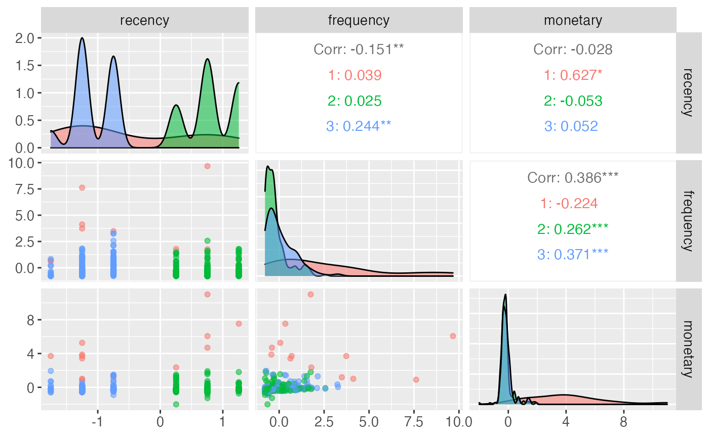
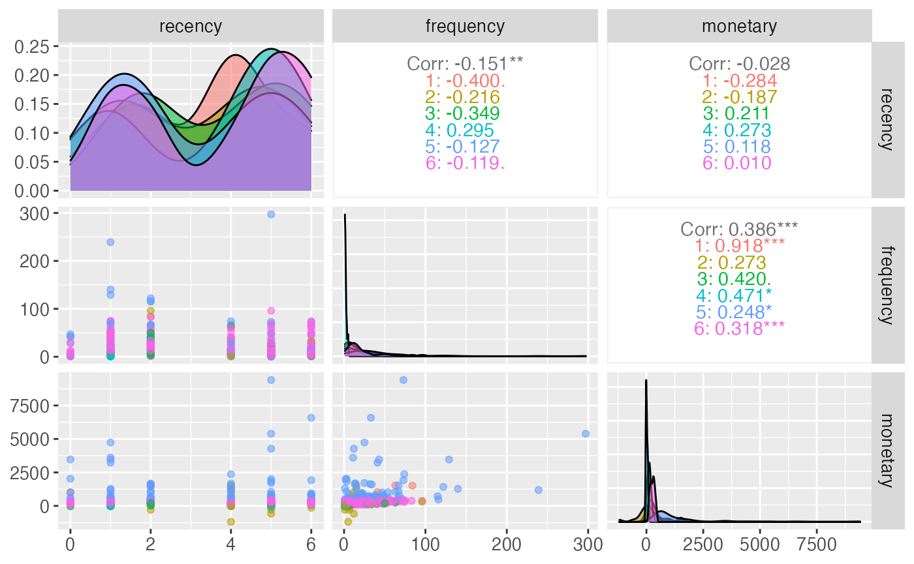

Visualisations
Visualisations.RmdCITRUS offers different visualization options, depending on model selected.
Decision Tree
If the tree model is used the rpart object can be easily visualised.
hyperparameters <- list(dependent_variable = 'response',
min_segmentation_fraction = 0.05,
number_of_segments = 6,
print_plot = FALSE,
print_safety_check=20)
model <- tree_segment(citrus::preprocessed_data, hyperparameters)
rpart.plot(model$segment_model, roundint=FALSE)
However, the standard plotting functionality has some limitations with certain data so there is a prettify functionality added that provides nicer visualisations.
model <- tree_segment_prettify(model,print_plot = T)
When using the segment function it is possible to choose to visualise and/or prettify the plot.
model <- segment(citrus::preprocessed_data,
modeltype = 'tree',
FUN = NULL,
FUN_preprocess = NULL,
steps = c('model'),
prettify = T,
print_plot = T,
hyperparameters = hyperparameters, verbose = TRUE)
#> Setting up model
#> Tree based model chosen
#> Validating input data
#> Training model
#> Number of segments: 6
#> Prettifying output data
#> Abstracting model
#> Generating output table
#> Finished!
Pair Plot
The pair plot is useful for visualizing the segments generated by the model, their distribution in the features’ space and their correlation.
At the moment if unsupervised model is used, it is possible to pass the model straight to the citrus_pair_plot function.
hyperparameters <- list(centers = 'auto',
iter_max = 50,
nstart = 5,
max_centers = 5,
segmentation_variables = NULL,
standardize = TRUE)
preprocessed <- citrus::preprocessed_data %>% select(id, recency, frequency, monetary)
unuspervised_model <- k_clusters(preprocessed, hyperparameters = hyperparameters, verbose = FALSE)
citrus_pair_plot(unuspervised_model)
In order to visualise the segments generated by the tree model, the model first needs to be processed in the model management layer. This step is automatically done when using the segment function.
hyperparameters <- list(dependent_variable = 'response',
min_segmentation_fraction = 0.05,
number_of_segments = 6,
print_plot = FALSE,
print_safety_check=20)
model <- segment(citrus::preprocessed_data,
modeltype = 'tree',
FUN = NULL,
FUN_preprocess = NULL,
steps = c('model'),
prettify = F,
print_plot = F,
hyperparameters = hyperparameters, verbose = TRUE)
#> Setting up model
#> Tree based model chosen
#> Validating input data
#> Training model
#> Number of segments: 6
#> Abstracting model
#> Generating output table
#> Finished!
citrus_pair_plot(model$CitrusModel, c("recency", "frequency", "monetary"))